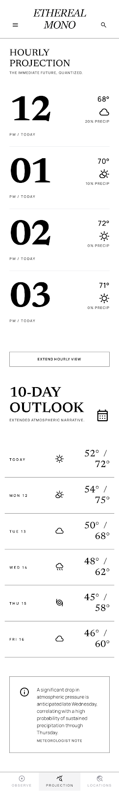

Flutter + weather APIs + product UI
Ethereal Weather
A high-contrast weather app designed like an editorial product: current conditions, forecast projection, radar-style visualization, saved cities, and current-location support.
- Problem
- Most weather apps feel crowded and generic.
- Solution
- A focused weather interface that prioritizes hierarchy, clarity, and fast scanning.
- Challenge
- Balancing live API states, saved locations, theme logic, and responsive Flutter screens.